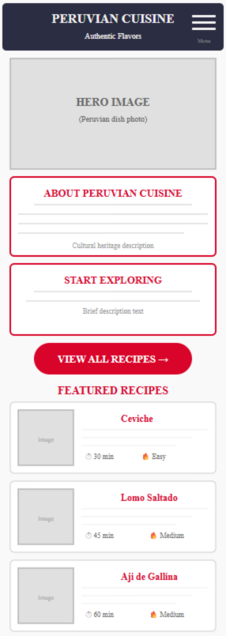
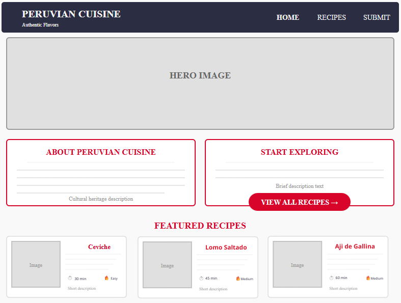

Site Name
Peruvian Cuisine
I chose this name because it directly represents the purpose of the website, which is to highlight and share the richness of Peruvian food culture. This name is simple, recognizable, and easy to search for.
Optional domain: peruvian-cuisine.org
Site Purpose
The purpose of this site is to share information about Peruvian cuisine, showcase popular recipes, and provide a way for visitors to interact by submitting their own favorite recipes. It will serve as an engaging resource for people who want to learn more about Peruvian food and culture.
The site will provide:
- A collection of traditional Peruvian recipes with detailed instructions
- Information about the cultural influences on Peruvian cuisine
- A form for users to submit their own recipes
- Educational content about ingredients and cooking techniques
Scenarios
Scenario 1: What are the most popular traditional Peruvian dishes and how can I cook them at home?
Answer: The site will have a recipes page with step-by-step instructions, ingredients, and cooking times for each dish.
Scenario 2: Where can I submit my own Peruvian recipe to share with others?
Answer: The site will include a recipe submission form where users can share their favorite recipes.
Scenario 3: How is Peruvian cuisine influenced by different regions and cultures?
Answer: The site will have educational content explaining the different cultural influences on Peruvian food.
Color Schema
The color scheme is inspired by the Peruvian flag and traditional food culture:
Red
Dark Blue
Gray
Light Gray
Where Colors Will Be Used:
- Red (#d90429) - Used for headings, buttons, and links
- Dark Blue (#2b2d42) - Used for navigation bar and footer
- Gray (#333) - Used for body text
- Light Gray (#f2f2f2) - Used for backgrounds
Typography
The website will use two fonts from Google Fonts:
Montserrat
This font will be used for all headings (h1, h2, h3) and navigation.
Open Sans
This font will be used for body text, paragraphs, and descriptions.
Wireframe
Below is the general structure of the homepage layout:
Mobile View
Desktop View
Key Features:
- Mobile version has a hamburger menu and stacked content
- Desktop version has horizontal navigation and side-by-side sections
- Both versions include: hero image, about section, call-to-action button, and featured recipes